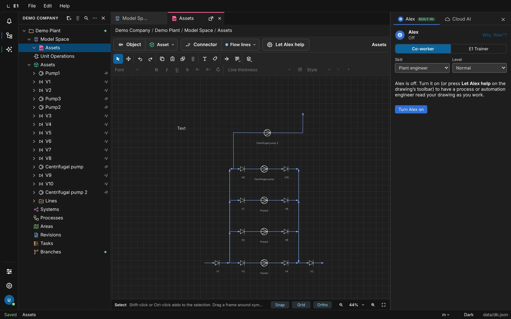
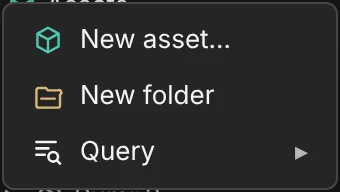
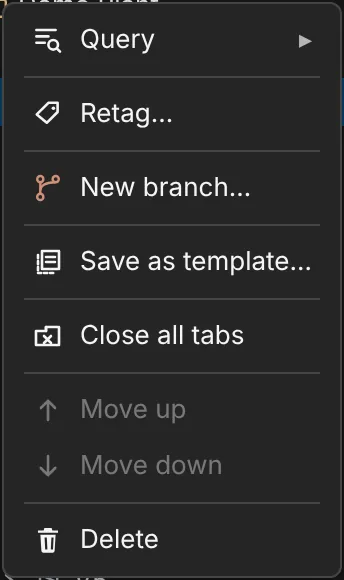

Academy / User guide / Projects and the explorer
3. Projects and the explorer
Create, rename, arrange and delete projects and folders, the sections of a project, the Bin, searching and dragging in the explorer.
About this guide
This guide covers the explorer, the tree on the left of the E1 window: your projects, how you arrange them in folders, the nine sections every project has, the folders and sheets inside the sections, the Bin, searching the tree and dragging rows around.
The typical workflow
- Create a project and rename it.
- Get to know the sections of a project and what clicks, double-clicks and marks in the tree do.
- Make folders and sheets inside the sections, and move them by drag and drop.
- Find things with the explorer search, and fold the tree with the explorer header buttons.
- Arrange your projects with project folders and Move up / Move down, and use the organization menu.
- Delete a project and restore it from the Bin, and work with the Deleted bin and the Voided bin inside a project.
- See what is planned for the Branches section.
Before you start
E1 is open and you know the parts of the window (the E1 window). The explorer is shown; if it is hidden, click the tree icon Explorer on the left rail. Making objects inside the sections is described in Objects, attributes and tags.
Create a project
A project holds one plant or job: its drawings, equipment, lists, documents and tasks. A new project is created at once with its nine sections, named "New project", and you rename it afterwards.
- Where
- Explorer header → New project (the folder icon with a plus); also File → New project, More explorer actions (…) → New project, the organization menu → New project, and right-click a project folder → New project
- Who
- A license (without one you can only view)
- Before you start
- The explorer is shown.
Steps
| # | Action | Expected result |
|---|---|---|
| 1 | Click New project in the explorer header. | A new row New project appears in the tree and is selected. If that name is taken it is "New project 2", then "New project 3", and so on. The status bar shows Saved. |
| 2 | Expand the new project with its arrow. | It contains the nine sections in this order: Model Space, Unit Operations, Assets, Systems, Processes, Areas, Revisions, Tasks, Branches. |
| 3 | Choose File → New project. | One more project appears, selected, with the next free name. |
| 4 | Right-click a project folder (see project folders) → New project. | The new project is created inside that folder. |

File → New project shows the shortcut Ctrl+N (⌘N), but the key does nothing in E1 today; the browser may run its own action (a new window). Use the button or the menu.
Give the project its name next: Rename a project. Its settings (content packages, drawing options, tag rules) are under File → Project settings…; see Tag rules.
Rename a project
Rename a project in the tree with F2, or on its data sheet. The new name shows everywhere at once: the tree, the path bar and the tab titles, and it is kept after a reload.
- Where
- Select the project row and press F2; or double-click the project and edit its name on the data sheet
- Who
- A license and a project role that may edit the project
- Before you start
- The project exists in the explorer.
Steps
| # | Action | Expected result |
|---|---|---|
| 1 | Click the project row once. | After a short moment (about a quarter of a second, so that a double-click can win) the row is selected. |
| 2 | Press F2. | The name turns into a text box Rename. |
| 3 | Type a new name, for example "Demo Plant", and press Enter. | The row shows the new name. The status bar shows Saved. |
| 4 | Press F2 again, type something and press Esc. | The rename is cancelled; the name stays as it was. |
| 5 | Reload the page (F5 (⌘R)). | The project still has the new name. |
| 6 | Double-click the project row. | The project's data sheet opens as a tab. Change the name in its name field and press Tab: the tree shows the new name. |
The sections of a project
Every project has the same nine sections, always in the same order. Each section holds one kind of thing, and right-clicking a section offers exactly what can be made there. The sections cannot be added, removed or reordered.
- Where
- Explorer → expand a project
- Who
- Anyone who can open the project
- Before you start
- A project exists.
What each section holds
| Section | What it holds | Right-click → New |
|---|---|---|
| Model Space | The drawings: sheets and their folders | New sheet |
| Unit Operations | Process steps | New unit operation… |
| Assets | Equipment, instruments and their connections. The group Lines lists every drawn pipe run, signal, cable and wire as an object. | New asset… |
| Systems | The functional breakdown: systems and functions | New system… |
| Processes | Steps, fluids and operating cases | New process… |
| Areas | Site, plant, unit, room, cabinet | New area… |
| Revisions | Drawings, lists and datasheets as issued documents | New document… |
| Tasks | Engineering work tied to objects | New task… |
| Branches | Working branches of the plant model (planned) | New branch (opens Under construction) |
Steps
| # | Action | Expected result |
|---|---|---|
| 1 | Expand a project. | The nine sections in the order of the table above. There is no Lines section and no "Workspace" row. |
| 2 | Expand Assets. | The project's equipment, and at the end a group Lines. |
| 3 | Right-click Assets. | A menu with New asset…, New folder and Query ▸. |
| 4 | Right-click Systems → New system…. | A window New object in Systems opens. Click Cancel. |
| 5 | Double-click Model Space. | Its page opens with the heading "Model Space" and the list of its sheets. An empty Model Space says "No 2D spaces yet." |
| 6 | Double-click an empty section such as Areas in a new project. | Its page says "Nothing in this section yet." The page has a toolbar with the section's New … button, New folder, Import and Export. |

Marks on sections: Revisions shows "Updated" when a document has a revision you have not seen yet; Tasks shows "Open tasks: N". The toolbar of the Tasks page has a working filter All / Open / Done.
Review check A1 still lists "Workspace" and "Lines" among the sections. Since 2026-11-07 there is no Workspace row (the explorer header names the organization instead), and Lines is a group under Assets, not a section. The filter All / Drawings / Lists / Datasheets on the Revisions page only changes its label and opens Under construction.
Rows, clicks and marks in the explorer
A click selects a row, a double-click opens it, and only the arrow expands or collapses it. Small marks at the end of a row tell you that something needs your attention, and a parent row rolls them up.
- Where
- Explorer
- Who
- Anyone who can open the project
- Before you start
- A project with a sheet and some objects.
What a double-click opens
| Row | Opens |
|---|---|
| Project | Its data sheet |
| Model Space | Its page with the list of sheets |
| Sheet | Its drawing |
| Object | Its object window (on the data sheet when the class has one) |
| Drawing shortcut under an object ("sheet, drawing") | That drawing with the object in view (also Enter) |
| Reference (a related object shown with a link mark) | The referenced object |
Steps
| # | Action | Expected result |
|---|---|---|
| 1 | Click a section name (not its arrow). | The row is selected; it does not expand. |
| 2 | Click the arrow in front of it (Expand name). | The row expands; the arrow now reads Collapse name. |
| 3 | Double-click a sheet under Model Space. | The drawing opens as a tab and the path bar shows organization / project / Model Space / sheet. |
| 4 | Expand an object under Assets that is drawn on a sheet and double-click its drawing shortcut. | That drawing opens with the object in view. |
| 5 | Hover a mark at the end of a row. | A tooltip explains it (see the list below). |
The marks and their tooltips: "Modified since document" and "Added since document" (changed after a revision was issued), "Needs review: N unresolved comment(s)", "Open tasks: N", "Tag pending: an input of its tag rule is missing", "Tag out of date: an input of its tag rule changed", "Updated" (on Revisions) and "Open branch" (on Branches). A collapsed parent shows "Needs attention", "Modified", "Added" or "In review" for what is inside.

Keys in the tree: F2 renames the selected project or object, Delete or Backspace deletes it (see Delete a project and Delete an object), and Esc clears projects picked with Ctrl-click.
Folders and sheets inside a project
Every section takes folders, and folders nest as deep as you like. In Model Space you make the sheets you draw on. Folders and sheets are renamed in place, and deleting them moves them to the project's Bin, from where they can be restored.
- Where
- Right-click a section or a folder → New folder; right-click Model Space or a folder in it → New sheet
- Who
- A license and a project role that may edit the project
- Before you start
- A project is expanded in the explorer.
Steps
| # | Action | Expected result |
|---|---|---|
| 1 | Right-click Model Space → New sheet. | A sheet "2D space" appears in rename mode. |
| 2 | Type "Sheet 1" and press Enter. | The sheet is named "Sheet 1" and opens as a tab whose title shows organization / project / Model Space / Sheet 1 when you hover it. |
| 3 | Right-click Model Space → New folder, type "Area A", press Enter. | A folder "Area A" appears in Model Space. |
| 4 | Right-click the folder "Area A". | Exactly these items: New sheet, New folder, Rename, Void, Delete, Query ▸. |
| 5 | Right-click "Area A" → New folder, then in that folder New folder again. | Folders nest three levels deep. |
| 6 | Right-click "Sheet 1" → Rename, type another name, press Esc. | The rename is cancelled; the name stays "Sheet 1". |
| 7 | Right-click "Sheet 1" → Delete. | No question is asked. The sheet disappears from Model Space, and a Bin row appears at the end of the project with the sheet in its Deleted bin. |
| 8 | Right-click Assets → New folder. | A folder appears under Assets. Every section takes folders the same way. |
The right-click menu of a sheet has Rename, Data sheet, Query ▸, Void and Delete. A folder in another section offers that section's New … item instead of New sheet. Drawing on a sheet is described in the sheet view.
Move rows by drag and drop
Drag sheets and folders into folders or between their neighbours, drag objects to where their class may live, and drag projects into project folders. E1 refuses a drop that does not fit; nothing happens then.
- Where
- Explorer, with the mouse
- Who
- A license and a project role that may edit the project (moving projects is personal and needs no role)
- Before you start
- Model Space has two sheets ("Sheet 1", "Sheet 2") and two folders ("Area A", "Area B").
Steps
| # | Action | Expected result |
|---|---|---|
| 1 | Drag "Sheet 1" onto the folder "Area A". | Sheet 1 moves inside Area A. |
| 2 | Drag the folder "Area B" onto "Area A". | Area B moves inside Area A. |
| 3 | Drag "Sheet 2" just above "Sheet 1". | The order inside Area A is Sheet 2, Sheet 1, Area B. |
| 4 | Drag "Sheet 1" onto a folder under Assets. | The drop is refused; nothing changes. |
| 5 | Drag a pump from Assets onto a Model Space folder. | The drop is refused; nothing changes. |
| 6 | Drag a row and hold it over a collapsed folder for about half a second. | The folder expands so that you can drop inside it. |
Sheets and folders stay within their own section, and a folder cannot be dropped into its own sub-folder. An object can be dropped only on a section or folder that its class may live in (see Move an object). Dropping an object on a sheet's drawing places it there instead.
Search the explorer
The explorer search filters the tree to the rows that match what you type, and also finds tags, names and line numbers in every project you may open, even ones that are not expanded.
- Where
- Explorer header → Search (magnifier)
- Who
- Anyone who can open the project
- Before you start
- A project with objects such as Pump1 and Pump2.
Steps
| # | Action | Expected result |
|---|---|---|
| 1 | Click Search in the explorer header. | A box "Search tags and names" appears under the header and has the focus. |
| 2 | Type pump2. | The tree shows Pump2; Pump1 and other rows that do not match are hidden. |
| 3 | Wait a moment. | A list "Found in the projects" shows the matches with tag, name and project. With none it says "Nothing found in the projects". |
| 4 | Click a match in that list. | The object opens. |
| 5 | Type a word that matches nothing, such as xyzzy. | The tree says "No matches". |
| 6 | Press Esc. | The box closes and the whole tree is back. Clicking Search again does the same. |
The project-wide list starts from two typed characters.
The explorer header: expand, collapse and more
The header at the top of the explorer names your organization and carries the buttons for the whole tree: new project, delete, search, a menu with more actions, and hide.
- Where
- The top of the explorer
- Who
- Everyone
- Before you start
- A project is expanded in the explorer.
From left to right: the organization's name (a button that opens the organization menu), New project, the trash button (Delete project, disabled with the tooltip "Select a project to delete" until a project is selected), Search, More explorer actions (…) and × Hide explorer.
Steps
| # | Action | Expected result |
|---|---|---|
| 1 | Click More explorer actions (…). | A menu with New project, Expand all, Collapse all, Retag… and Delete project. |
| 2 | Choose Collapse all. | Only the project rows remain. |
| 3 | Open the menu again and choose Expand all. | Everything is expanded again; objects such as Pump1 are visible. |
| 4 | Click × Hide explorer. | The explorer is hidden. Click the tree icon Explorer on the left rail to bring it back. |
Retag… is described in Retag with preview.
Arrange projects in folders, Move up and Move down
Put your projects in folders and in the order you like. The arrangement is your own: it is saved with your view, it changes nothing in the projects and nothing for anyone else.
- Where
- Organization menu → New folder; right-click a project → Move up / Move down; right-click a project folder
- Who
- Everyone (the arrangement is personal)
- Before you start
- At least three projects.
Steps
| # | Action | Expected result |
|---|---|---|
| 1 | Click the organization name in the explorer header → New folder. | A row "New folder" appears in rename mode. |
| 2 | Type "Clients" and press Enter. | A project folder "Clients" at the top level. |
| 3 | Right-click the third project → Move up. | It swaps places with the project above it. |
| 4 | Right-click the first project. | The menu shows Query ▸, Move up (disabled), Move down and Delete. Choose Move down: it moves one place down. |
| 5 | Drag a project onto "Clients". | It moves into the folder (expand "Clients" to see it). |
| 6 | Right-click "Clients" → New folder, name it "Archive". | A sub-folder "Archive" inside Clients. |
| 7 | Wait a second and reload the page. | The same order and folders. |
| 8 | Right-click "Archive" → Delete folder. | No question is asked. The folder is gone and anything that was in it moves up to where the folder was. |

The right-click menu of a project folder has New project, New folder, Rename, Move up, Move down and Delete folder. Dragging a project onto the empty part of the tree moves it back to the top level.
Delete a project and restore it from the Bin
A deleted project goes to the Bin at the end of the tree, from where you can restore it. Only Delete permanently… in the Bin removes it for good, with everything in it.
- Where
- Select the project and click the trash button in the explorer header; or right-click the project → Delete; or More explorer actions → Delete project; or select it and press Delete
- Who
- A project role that may delete the project
- Before you start
- A project you may delete, for example a new one.
Steps
| # | Action | Expected result |
|---|---|---|
| 1 | Right-click the project → Delete. | The browser asks: Delete project "name"? It goes to the Bin, from where it can be restored. |
| 2 | Click OK. | The project is gone from the projects. A top-level row Bin appears after the projects. |
| 3 | Expand Bin. | The project is listed inside. |
| 4 | Right-click the project in the Bin. | Exactly two items: Restore and Delete permanently…. |
| 5 | Choose Restore. | The project is back among the projects. The Bin row disappears when it is empty. |
| 6 | Delete the project again, expand Bin, right-click it → Delete permanently…. | The browser asks: Delete project "name" permanently, with everything in it? It cannot be restored. |
| 7 | Click OK. | The project is gone for good. |
Several projects at once
| # | Action | Expected result |
|---|---|---|
| 1 | Click a project, then Ctrl-click (⌘-click) a second one. | Both are picked. The trash button's tooltip reads Delete 2 projects. Shift-click picks a range. |
| 2 | Click the trash button. | The browser asks "Delete 2 projects? They go to the Bin, from where they can be restored." with a list of their names. Esc instead clears the picks. |
This Bin at the end of the tree is for projects. Things deleted inside a project go to that project's own Bin: see The project Bin.
The project Bin: Deleted bin and Voided bin
Inside each project, a group Bin collects what you deleted (Deleted bin) and what you voided (Voided bin), sorted by section. Deleted things can be restored or deleted permanently; voided things can only be unvoided.
- Where
- Explorer → the project → Bin (shown only when something is in it)
- Who
- A license and a project role that may edit the project
- Before you start
- A project with valves V9 and V10 under Assets, or any objects of your own.
Steps
| # | Action | Expected result |
|---|---|---|
| 1 | Select V10 under Assets and press Delete. | V10 is gone from Assets. A Bin row appears in the project, collapsed. |
| 2 | Expand Bin → Deleted bin → Assets. | V10 is listed there. |
| 3 | Right-click V10 in the bin. | The items Open, Restore and Delete permanently…. |
| 4 | Choose Restore. | V10 is back under Assets (and on its sheets where it was drawn). The Bin disappears when it is empty. |
| 5 | Delete V9 and V10, then right-click Deleted bin. | The item Empty deleted bin… (disabled when the bin is empty). |
| 6 | Choose Empty deleted bin…. | The browser asks "Delete the 2 items in the deleted bin permanently? They cannot be restored." After OK the bin is empty and the Bin row disappears. |
| 7 | Right-click an object → Void, then expand Bin → Voided bin and right-click it there. | Only Unvoid is offered: nothing voided can be deleted. |
For a sheet or folder in the Deleted bin, Delete permanently… asks Delete sheet "name" permanently? It cannot be restored. or Delete folder "name" permanently with everything inside it? It cannot be restored. For an object it opens a preview of what goes with it: see Delete an object.
Branches
The Branches section is where working branches of the plant model will live: you change a copy of part of the design and push it back when it is ready. Today the section takes folders only; its other controls open Under construction.
- Where
- Explorer → the project → Branches
- Who
- Everyone can see the section
Being planned (roadmap M8 Branches, not started). These controls are on screen but only open the Under construction tab today: right-click Branches → New branch; the section page's New branch button; its filter All / Procurement / Construction; and the green dot "Open branch" on the section row.
What you will be able to do
- Create a branch from part of the design and see it in the branch list (15.1).
- Work in a branch without others seeing your changes until you push them (15.2), pull others' changes and resolve conflicts object by object, also on the drawing (15.3, 15.4).
- Push the branch back and notify the others (15.5); open merge requests for a colleague to review (16.2).
- Use branch types such as design or commissioning, branch packages, and automatic resolution rules (16.1, 16.3, 16.4).
- Have Cloud AI make its changes in your own branch (17.1, 17.2).